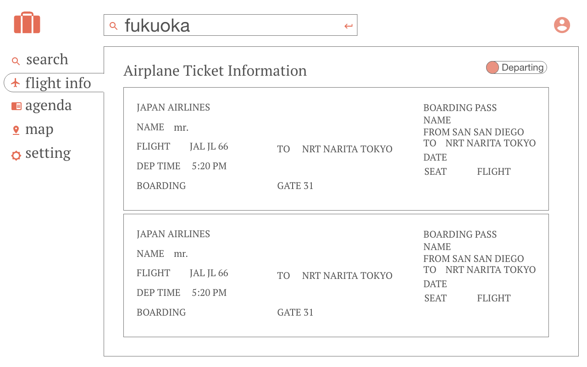
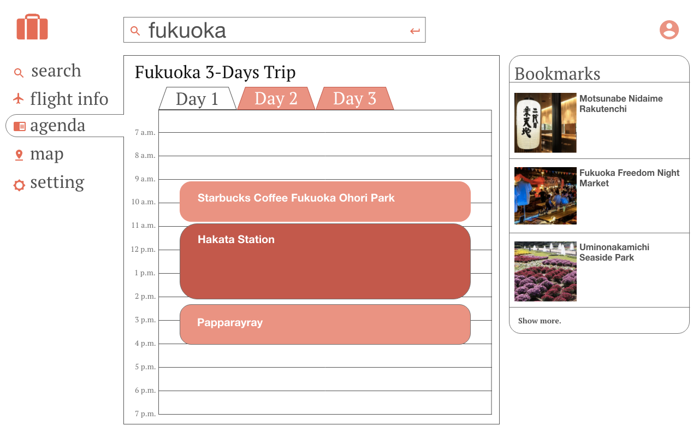
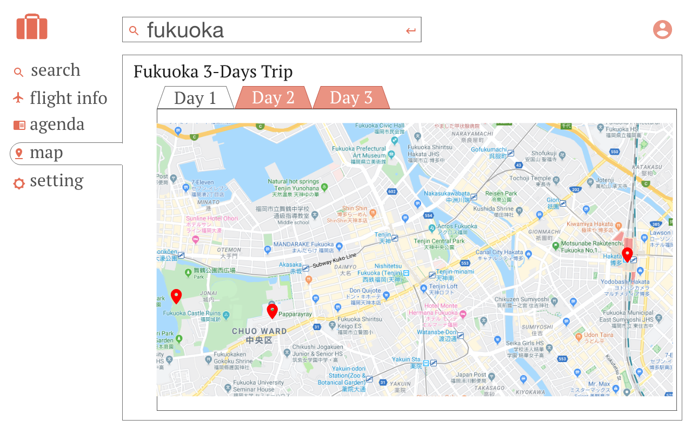

Collaborative Travel Itinerary
Collaborative work in travel itinerary planning can be seen as inconvenient for many, however, there are many benefits in being able to work together on a travel plan. We have created surveys and interviewed people who often travel for leisure and asked them what their habits are in planning trips on their own as well as with a group of friends. This system is designed to help make collaborative travel itinerary planning more available by including functions such as bookmark system, live-editing to create an organized itinerary. Search functions and recommendations are incorporated for users to expand their itinerary.
Introduction:
How can we create an easy-to-use organized and informative travel itinerary especially when traveling as a group?
Research & Assumption
- Having to go through different sites are tedious.
- One person in a group does all the planning during travel.
- People have difficulties to begin research when they don't know where to begin.
- They have narrowed down some criteria on how they planned the trip, trying to cut cost to make it more affordable, experiencing the lifestyle and cultures of the places they visit, and having the freedom of going to places that they really would like to go.
We then conducted personal interviews and published online survey on travel planning strategies, time it takes to conduct research, habits and behavior of people who often go on trips. And some of our assumptions are proven wrong. Our research shows that:
- We are able to find out that when it comes to planning as a group for friends, usually one person does the majority of the planning by taking in suggestions of what the people in the group enjoys doing. This often leads to arguments during the trip especially if the person planning did not strike a balance on going to places that caters to the group.
- People enjoy using a variety of methods to conduct research and they enjoy visiting multiple travel websites.
- People enjoy going to places their friends recommend over what the internet suggests.
- Foreign public transport system is confusing.
- People prefer freedom over schedule.
Value Proposition. How is this valuable?
Reduces Stress. By having information neatly organized allows you to maximize your time in enjoying yourself during the trip.Cutting Cost. Knowing where you prioritize and want to go makes it easier to create an appropriate budget and let you know how much you are going to spend.Saving Time. Allowing you to access information quickly lets you be on the go faster. In case of any emergency happens, you can quickly make a plan b using the information provided.
Stakeholders. Who uses this product? And what are some of their struggles?
- We want to see the world with the little money we have.
- I want to have a place where I can store the locations which my friends suggested me to go.
- I want to plan a trip, make it easier for me
- I want to plan a trip, save me time please.
Where? and When is this product used?
- Before the trip, doing research and collecting information on the platform.
- Planning with a group of friends, having a platform to perform collaborate research.
- During the trip looking up where to go next based on the itinerary you have made.
- During the trip looking up where to go next based on the the suggestions we provide.
Ideation
Ethnography Observations. How previous system worked
From our research, we find the following,
- People uses Google Search extensively to look for what they really want to do.
- Not a reliable way to share itinerary with friends beside using Google Drive folder.
- Google Docs, Google Sheets Google Maps, and screenshots are the most used functions for creating a travel itinerary
- Difficulty in editing information in a easy-to-use way
Competitive Analysis
| Competitor | Advantage/Key Features | Limitations |
|---|---|---|
| Trip Advisor |
|
|
| Google Trip |
|
|
| Yelp |
|
|
| Travel related Reading Materials |
|
|
Problems to Tackle.
- Presenting information in a organized manner.
- One convenient way to have travel information available.
- Editing and Sharing information in a group setting.
- Suggesting nearby attractions using data from local User Reviews and Recommendations site.
Wireframing
Visual Designs
We have utilized AB testing to determine which version of logo to use.
- We used sign-up button underneath each design to measure the engagment rate of different designs.


Solution
We created a travel itinerary application that enables research and organization function. It allows for you and your group of friends and be able to participate in the planning and contribute into the organization of an itinerary. People can access and edit the itinerary in real-time and provide information about other nearby attractions and means of traveling.
Functions
Sharing with your Group
- Users can invite others to join and participate in the making of itinerary.
- Each user has their own color and the edit they made can be viewed in real time.
- User can recover the itinerary to previous state in case of changes being made unintentionally.
Search Function

- Users can use our search engine to find nearby attractions by entering the location they are visiting.
- We bring in information from foreign User Review and Recommendation sites to narrow down our search.
- Each search entry provides pictures and a brief summary of the attraction.
Flight Ticket Info

- Users can then store their departing and returning flight information onto this app and no long have to dig through their e-mails.
Agenda

- Users are able to visualize how much time you are going to spend on one attraction by dragging your bookmark onto the agenda.
- Users can also create separate tabs for different cities and different days of the trip.
Map

- Users can visualize the distance between different locations they have bookmarked and utilize such information to plan out their agenda.
- Maps can be viewed under different tabs which highlights the locations listed in the tabs created in Agenda.
- Users have the ability to take the suggested means of transportation to their location.
Reflection
- Performing a user interview in the planning stage helped me on choosing the functionality that the users would like on an application as well as demonstrating that some of my initial assumptions were incorrect.
- Conducting research on competing products on the market gave me a clearer picture of the functionality of my product.
- Using an AB Test helped me decide on the visual design of the product.
Conclusion
- Narrow down the scope of the project.
- Ask our client to see what problems they want to solve and come up with a solution.
Overall, I have realized the importance of market research in design. The topic of traveling is really broad. In the beginning of this project I felt like there were so many aspects of travel planning that can be improved. Finding out the problems of our audience by asking them about their struggles with the topic help narrowing down to the problem that needs to be solved. It is informative to have the mindset of what function would I like to have to solve my problem when researching existing products on the market. I strive to continue creating products that solves problems from the users.